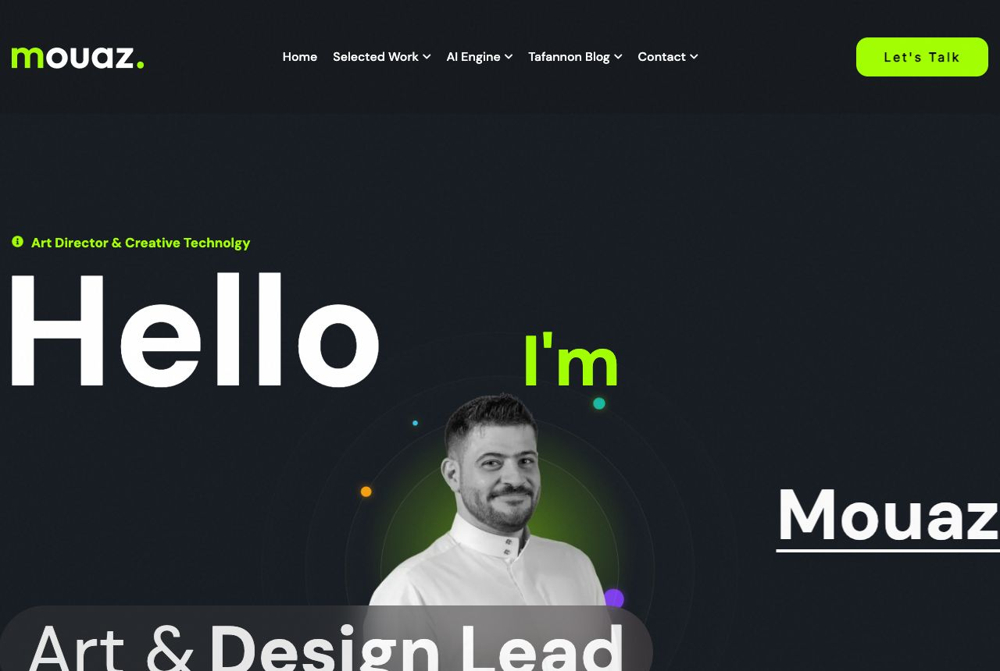
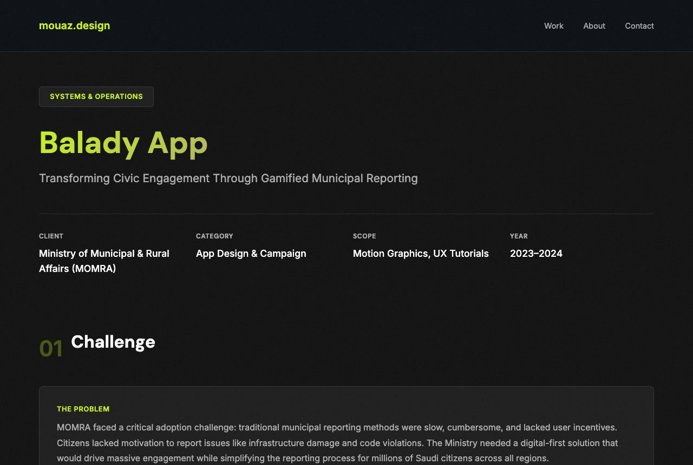
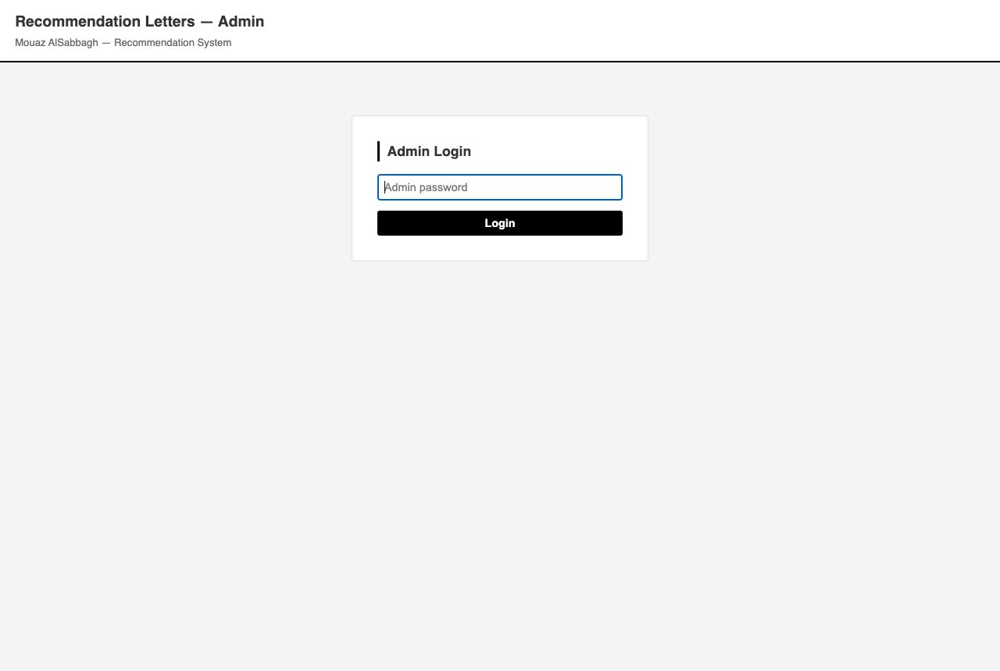
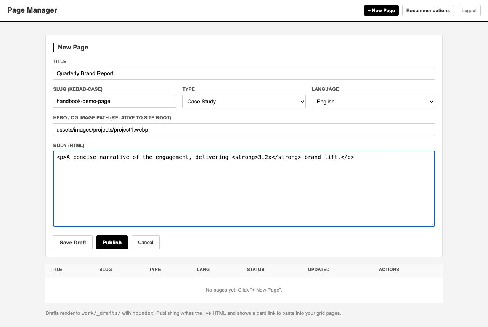
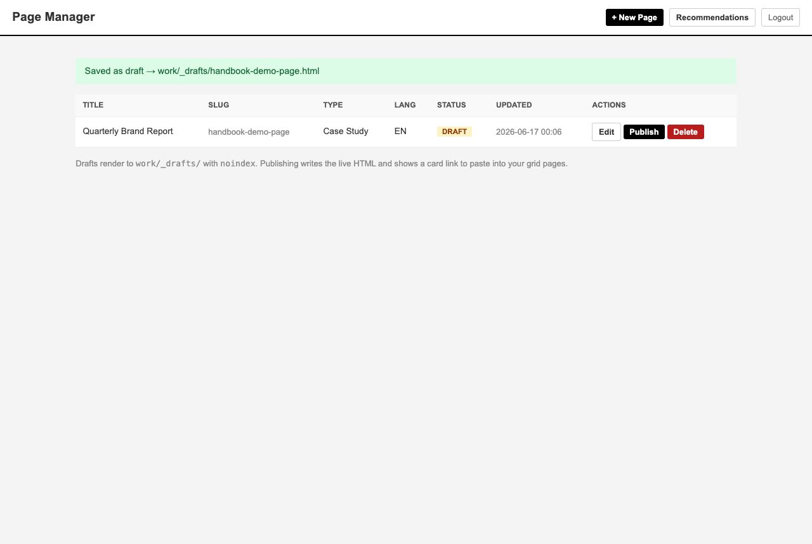
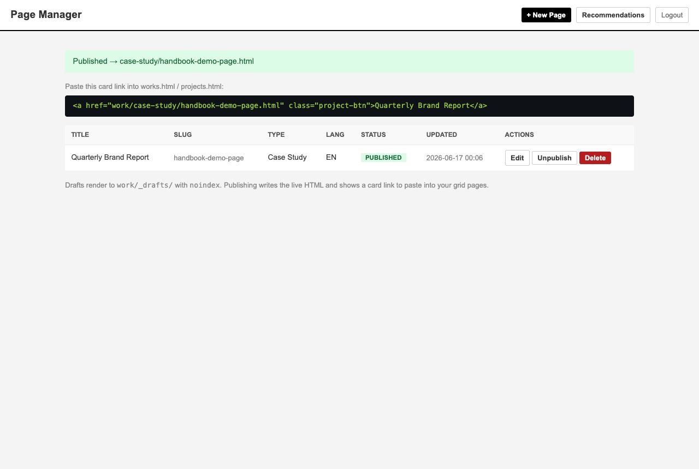
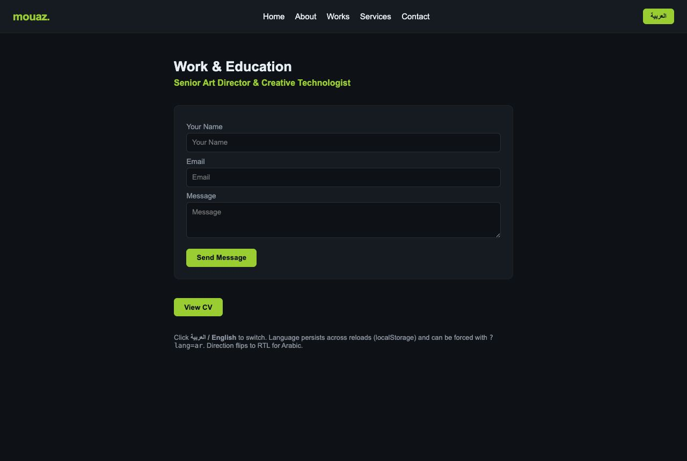
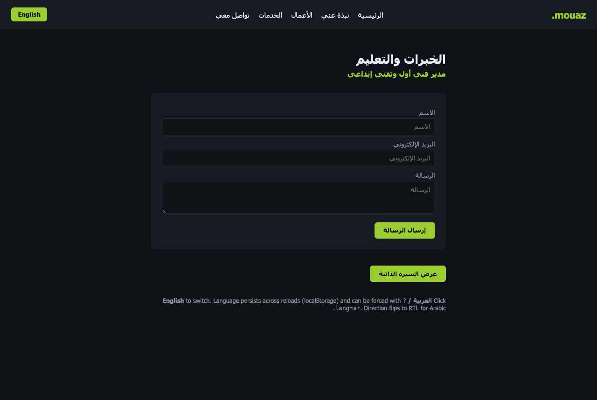
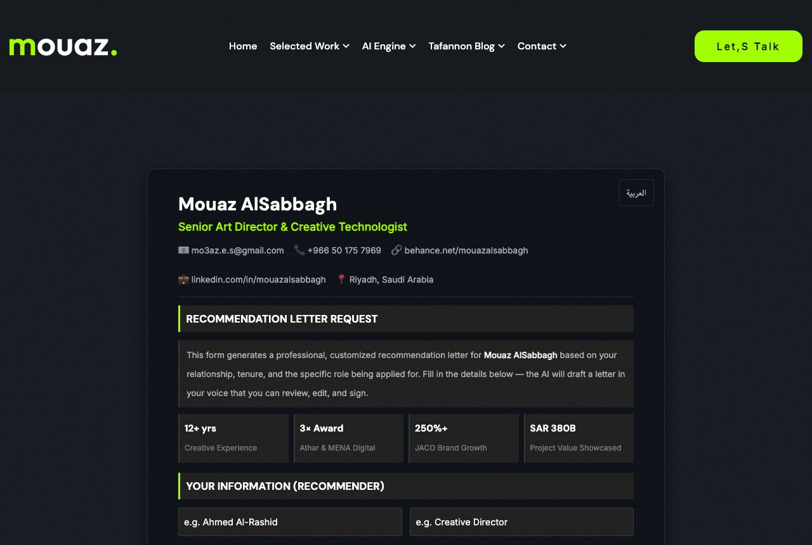
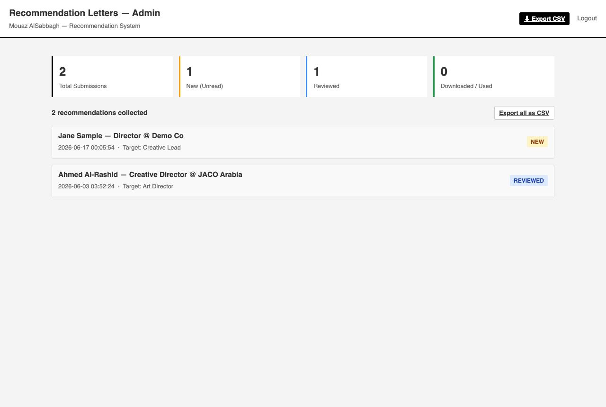

mouazalsabbagh.com — Handbook
Everything you need to run, edit, extend, and deploy the portfolio site and its recommendation backend — in one page. Start here; it links out to the deeper specialist docs.
Self-contained — open handbook/index.html by double-click, no internet needed.
Cross-links use ../; .html docs open styled, .md docs open as plain text.
1Site at a glance owner
rec/ folder: a page-maker and a recommendation-letter collector. There's no CMS —
you change a file, save, and it's live once uploaded.
Public pages: index.html, works.html / projects.html (the galleries),
about.html, services.html, blog.html, contact.html,
ai-engine.html, the CV, and 76 project pages under work/. Private (login required):
the page manager and the recommendations dashboard.
1.1 Architecture & repo map dev
/ root pages (index, works, about, contact, …) -> use ./assets/...
/work/case-study/ 36 rich case studies (case-study-<slug>.html)
/work/project-preview/ 40 project previews -> these use ../../assets/...
/work/_drafts/ unpublished drafts (noindex, git-ignored)
/assets/ css/ (style.css + design-system.css) · js/ · images/ (WebP) · fonts/ · php/
/rec/ collect.php (recs) · ai.php (AI proxy) · pages.php (page manager)
config.php (secrets, git-ignored) · templates/page-template.html
/i18n/ i18n.js + strings.json (EN/AR)
/database/ schema + localization workbook (.xlsx)
/handbook/ this documentPath-depth rule
Root pages reference assets as./assets/…; pages under work/* are two
levels deep, so they use ../../assets/…. Get this wrong and images 404.
↳ Full layout reference: docs-reports/GUIDES-MANUAL.md §1
2Running it locally both
http://localhost:8000, and everything works.

localhost:8000 with the PHP backend running.2.1 The two dev servers dev
.claude/launch.json:
| Name | Command | Port | Use when |
|---|---|---|---|
php-backend | php -S localhost:8000 -t . | 8000 | Always — serves static pages and runs PHP (recs, page manager). |
static | python3 -m http.server 8765 | 8765 | Static-only quick preview (no PHP). |
Start / stop
Use your editor's preview launcher, or run the command directly.php-backend serves
the whole site, so prefer it.
2.2 Database (MySQL) dev
brew services start mysql # start
brew services stop mysql # stop when done
mysql -u root # open a shellrecommendations, pages) auto-create on first use — no manual SQL.
↳ DB commands & schema: GUIDES-MANUAL.md §3 · database workbook
3Adding a portfolio page both
3.1 Which path should I use? owner
| If you want… | Use | Why |
|---|---|---|
| A flagship, cinematic case study with custom layout, metrics, animations | Path A — hand-authored | Maximum design control; matches the existing 36 case studies. |
| A standard page fast, no coding, draft → publish, English or Arabic | Path B — Page Manager | A form writes the HTML for you from a template. Minutes, not hours. |
3.2 Path A — hand-authored rich page dev
project-detail-template.html or an existing case study like work/case-study/case-study-balady-app.html) into work/_drafts/<slug>.html.<meta name="robots" content="noindex"> while it's a draft so search engines ignore it.og:image / Twitter meta. Keep the ../../assets/… path depth.http://localhost:8000/work/_drafts/<slug>.html.work/case-study/<slug>.html and paste the card link into works.html / projects.html.
case-study-balady-app.html) — custom inline CSS, hero, metrics. Contrast with the simpler Page-Manager output.case-study-my-project.html). The live Linux host is case-sensitive — MyProject.html works on Mac but 404s in production.↳ CSS/JS link order & per-page checklist: PORTFOLIO-PAGE-UPDATE-CHECKLIST.md · design tokens: design.md
3.3 Path B — the Page Manager both
The page manager (rec/pages.php) is a private admin tool: fill a form, save a
draft or publish, and it writes the live HTML from a template. It shares the same login as the
recommendations dashboard.
rec/collect.php?action=admin and enter the admin password.
rec/pages.php → + New Page and fill the form.
| Field | Required | Notes |
|---|---|---|
title | Yes | Page title (heading + <title>). |
slug | No | URL slug, kebab-case. Auto-derived from the title if left blank. |
type | Yes | case-study · project-preview · page. |
lang | Yes | en or ar (Arabic renders RTL). |
og_image | No | Image path from site root, e.g. assets/images/projects/project1.webp. |
body_html | No | Raw HTML body (admin-trusted, not escaped). |
work/_drafts/<slug>.html with a noindex tag and appears in the list.

<a class="project-btn"> card, and the PUBLISHED row.| Type | Draft path | Published path |
|---|---|---|
case-study | work/_drafts/{slug}.html(noindex) | work/case-study/{slug}.html |
project-preview | work/project-preview/{slug}.html | |
page | {slug}.html (site root) |
body_html is rendered raw — only the trusted admin should use it.3.4 The template & its tokens dev
rec/templates/page-template.html, replacing these tokens
(verbatim from the file):
| Token | Replaced with |
|---|---|
{{lang}} | en / ar → <html lang> |
{{dir}} | ltr / rtl (rtl when lang=ar) |
{{robots}} | noindex,nofollow meta for drafts; empty when published |
{{title}} | Page title (HTML-escaped) |
{{og_image}} | OG image path (defaults to assets/images/projects/project1.webp) |
{{base}} | '' for root pages, ../../ for work/* types — prefixes every asset path |
{{type_label}} | "Case Study" / "Project Preview" / "Page" (the kicker) |
{{body}} | Your body_html, inserted raw |
3.5 After publishing owner
Copy the card snippet the manager gives you and paste it into works.html (or
projects.html) where the project cards live, then reload the gallery to confirm the
link works. That's the one manual step the manager can't do for you.
4English / Arabic (i18n) both


4.1 Using it in a page dev
<a data-i18n="nav.home">Home</a>
<input data-i18n-attr="placeholder:form.email">
<button data-i18n-toggle>العربية</button> <!-- auto-relabels -->
<script src="i18n/i18n.js" data-i18n-src="i18n/strings.json"></script>work/* page use ../../i18n/i18n.js and data-i18n-src="../../i18n/strings.json".
Language resolution order
?lang=ar → localStorage(site_lang) → <html lang> → default en.
JS API
I18N.setLang('ar') · I18N.toggle() · I18N.t('nav.home') ·
I18N.lang · event i18n:applied.
4.2 Updating translations dev
python3 i18n/export_i18n.py # workbook → i18n/strings.jsonstrings.json (24 EN/AR keys today).
↳ Full i18n reference & live demo: i18n/README.md · i18n/demo.html
5The recommendation system both

rec/index.html).
5.1 How it works dev
rec/collect.php routes (via ?action=):
save (public POST JSON → stores submission), admin (login / dashboard),
login, logout, status (mark new/reviewed/downloaded),
export (CSV). The recommendations table (23 columns) auto-creates on first save.
AI proxy
rec/ai.php forwards a prompt to Anthropic server-side (model
claude-sonnet-4-6), keeping the API key off the browser, rate-limited to 10
requests/IP/hour.
5.2 Admin dashboard both
Open rec/collect.php?action=admin, log in, and review submissions. Use the status
dropdown to track each one and Export CSV for a backup.
↳ Deployment of the rec system: rec/DEPLOY_GUIDE.html · internals: GUIDES-MANUAL.md §4
6Configuration & secrets dev
rec/config.php (git-ignored). A committed template,
rec/config.example.php, shows the shape. Copy it and fill in real values:
cp rec/config.example.php rec/config.php| Key | Purpose |
|---|---|
ANTHROPIC_API_KEY | AI proxy key (prefers an env var) |
DB_HOST/NAME/USER/PASS | MySQL connection |
ADMIN_PASS_HASH | bcrypt hash of the admin password (never plaintext) |
SITE_OWNER_EMAIL | Notification recipient on new submission |
$ALLOWED_ORIGINS | Domains allowed to call the save / AI endpoints (CORS) |
Generate the admin hash
php -r "echo password_hash('your-admin-password', PASSWORD_DEFAULT), PHP_EOL;"password_verify; sessions are hardened (HttpOnly, SameSite=Strict, Secure over HTTPS) and CSRF-protected.
↳ Full hardening steps & rationale: SECURITY-FIXES.md
7Deploying to production (cPanel) both
config.php). Tables auto-create on first use.rec/config.php on the server with the rotated key + new passwords. Never commit it._archive/, .git/, node_modules/.pdo_mysql (cPanel → Select PHP Version).config.php returns 403, and CORS is limited to your domain.↳ Click-by-click: rec/DEPLOY_GUIDE.html · provisioning checklist: NEXT-STEPS.md §A
8Security checklist both
| ✓ | Item |
|---|---|
| ☐ | Secrets only in rec/config.php (git-ignored) — none in tracked PHP. |
| ☐ | .htaccess denies config.php (returns 403). |
| ☐ | CORS limited to your real domain (no *). |
| ☐ | Admin password is a bcrypt hash, distinct from the DB password. |
| ☐ | CSRF tokens on all admin POST forms. |
| ☐ | Live API key + DB/admin passwords rotated before go-live. |
↳ Code-level steps: SECURITY-FIXES.md · GUIDES-MANUAL.md §8
9Maintenance & build scripts dev
| Task | Command |
|---|---|
| Regenerate the schema/localization workbook | python3 database/build_workbook.py |
| Regenerate i18n strings from the workbook | python3 i18n/export_i18n.py |
| Convert a new image to WebP | Pillow: Image.open(src).save(dst,'webp',quality=82,method=6) |
| Minify a stylesheet | npx clean-css-cli assets/css/style.css -o assets/css/style.css |
.webp and use kebab-case filenames.
↳ Asset optimization detail: GUIDES-MANUAL.md §5
10Troubleshooting both
| Symptom | Cause / fix |
|---|---|
collect.php → 500 "Database connection failed" | MySQL not running or wrong creds. brew services start mysql; check config.php. |
| Form save returns empty / status 000 | The PHP server stopped — restart php-backend. |
| Images 404 on the live host but fine on Mac | Filename case mismatch — Linux is case-sensitive. Use kebab-case. |
php not found by the preview launcher | Use the absolute path /opt/homebrew/bin/php in launch.json. |
ai.php errors | Check the key in config.php, the 10/hr rate limit, and outbound HTTPS. |
| Find broken local asset links | Walk each HTML file, resolve every src/href, report missing — expect 0. |
↳ Expanded table: GUIDES-MANUAL.md §9
11Known open items / roadmap both
- Cloud deploy prep (the final stream) is not done yet — see NEXT-STEPS.
- Non-kebab filenames in
work/project-preview/that risk 404s on the case-sensitive host:AliExpress-GCC,JACO-Growth-Trilogy,JACO-sport-conten,JACO_commercial_systems,Ministry-of-Energy,Monthly_Champion,SMO-Vision-2030,Unknown_Soldier_League,ultimateGamer. - SEO: most pages lack a favicon and
og:image/Twitter meta.
↳ Status & plan: NEXT-STEPS.md · STATUS-REPORT.md · PROGRESS-REPORT.md · EXECUTION-PLAN.md
12Further reading both
This handbook is the hub. For depth, follow the specialist docs:
Operations manual — layout, servers, DB, backend, deploy, troubleshooting.
Click-by-click cPanel/HostGator deployment of the recommendation system.
Backend hardening steps: config, CORS, CSRF, password hashing.
EN/AR localization layer — integration, API, update workflow.
DB schema, DDL, and the EN/AR string source.
Design system tokens — colors, typography, spacing.
Per-page design-system audit & fix checklist.
The remaining roadmap and cloud-deploy plan.
Note: .md links open as plain text on double-click (no renderer locally); .html links open styled.